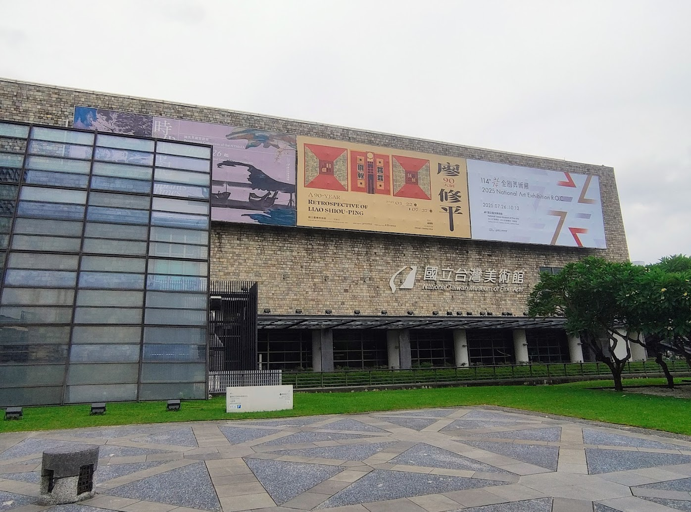
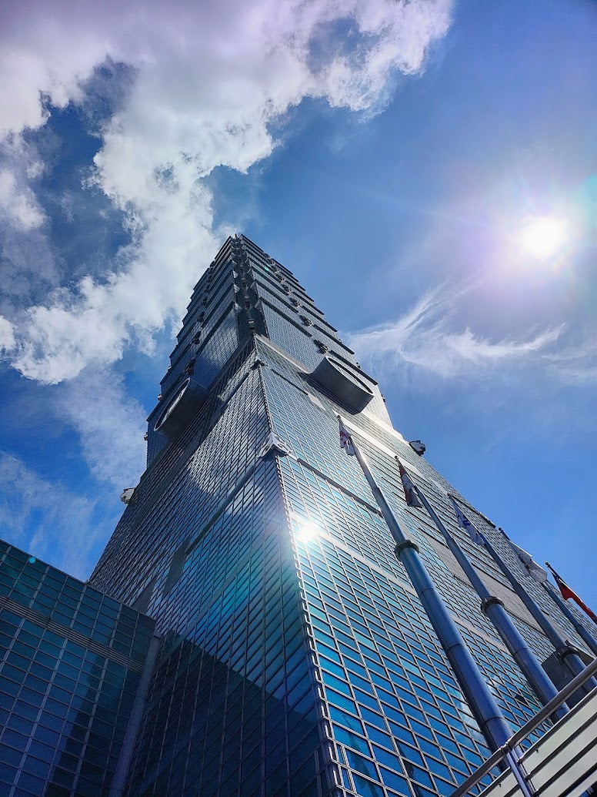
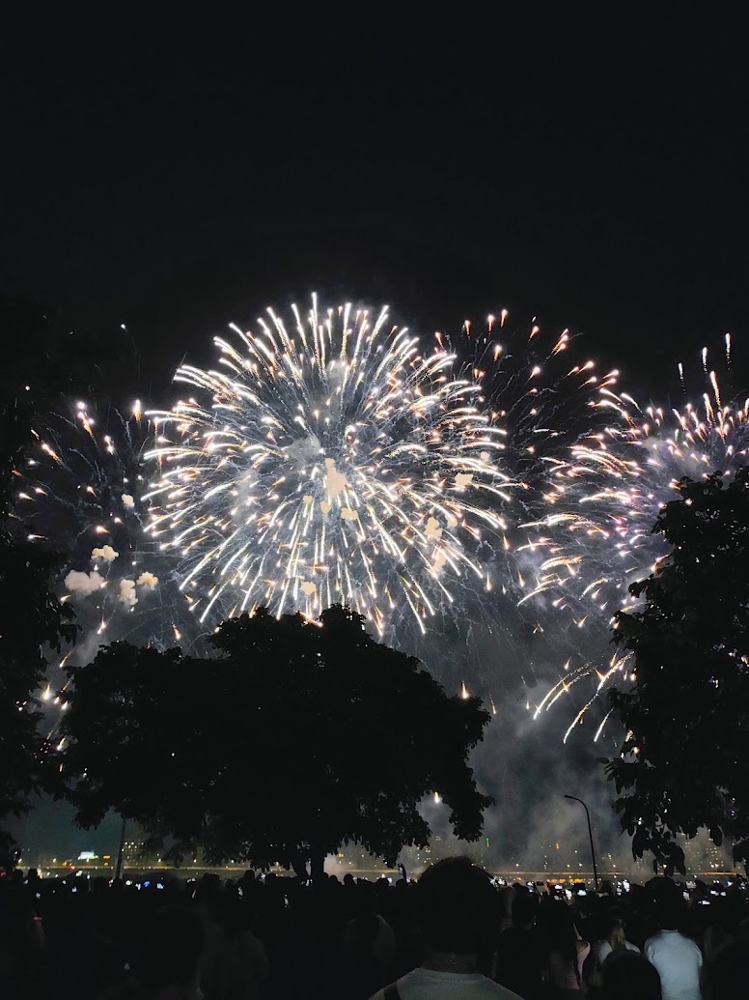
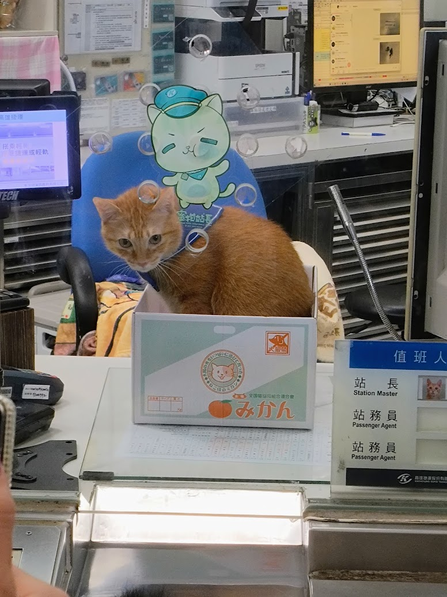
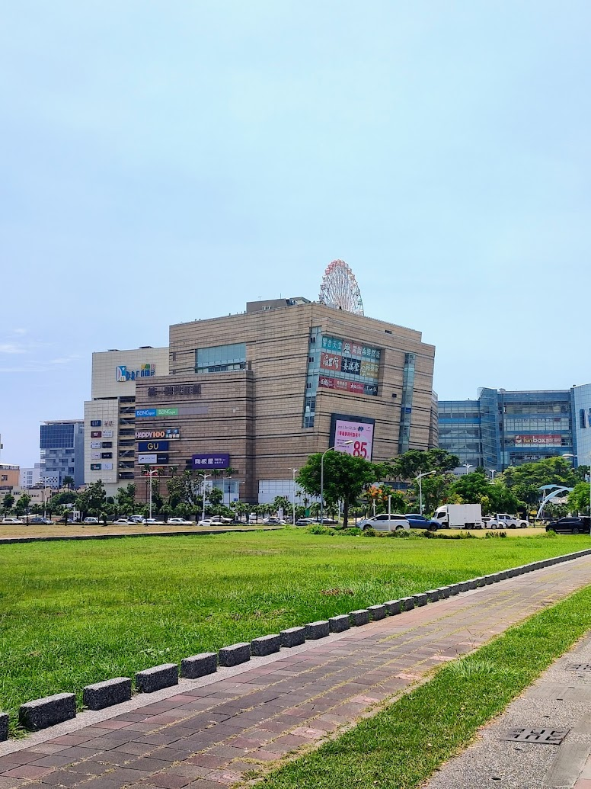

Tunghai University Internship
Research Intern - Department of Process Control Laboratory (Department of Chemial Engineering)
Tunghai University, Taichung, Taiwan (July 2025 - September 2025)
Research
During my time in Taiwan, I worked to optimize a biochemical process that produced a polyhydroxyalkanoate (PHA) polymer. We used artifical neurual networks, simulated annealing, and data analysis techniques in MATLAB. I have included a few graphs above from the process used. The final report for the project can be found here and goes into much more depth.
Visting Taiwan
During my approximately two months in Taiwan, I got the chance to visit many landmarks, eat lots of food,
and explore a few cities. Here, I highlight some of my favorites from the trip.
I spent most of my time in Taichung, where Tunghai University is located. The National Taichung Theater was probably
my favorite landmark, with an incredible design and fun vendors on the inside. I also loved the National Taiwan Musuem of Fine Arts, which was entirely free to visit.
Lastly, the near by Xitou Monster Village was a fun day trip to see the yokai (although the bus ride there is quite long).


Of course, I also visited Taipei. My hightlights were the Taipei 101 building, Y Sector Underground Mall, and the world's first cat cafe.


I think my favorite city that I visited was Kaohsiung, where I saw Mikan, the statio master cat, explored the largest
mall I have ever seen, and visited my favorite Night Market of the trip, the Liuhe Night Market.


I found Taiwan to be a very kind country; even though I could not speak the language, people were always nice. Their public transport
is also fantastic, and it got me everywhere I needed to go. I stayed in hostels on my weekend trips to Taipei and Kaohsiung,
and found them all clean and comfortable. Taiwan was a beatiful country, and I would love to visit again.
Acknowledgements
I would like to thank my supervisor Dr. Ta-Chen Lin and the team at Tunghai University for their support and guidance during my internship. I would also like to thank the IIPP program for providing this incredible opportunity. I can full-heartedly recommend this program to anyone interested in international research experiences.